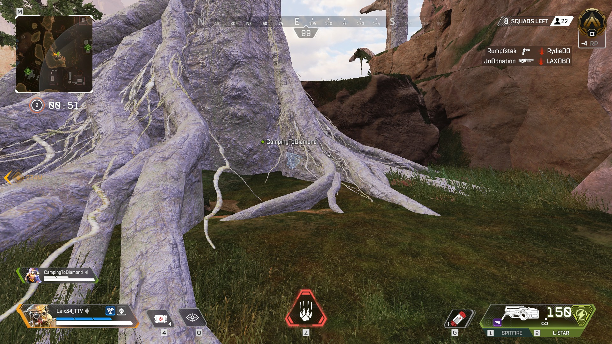
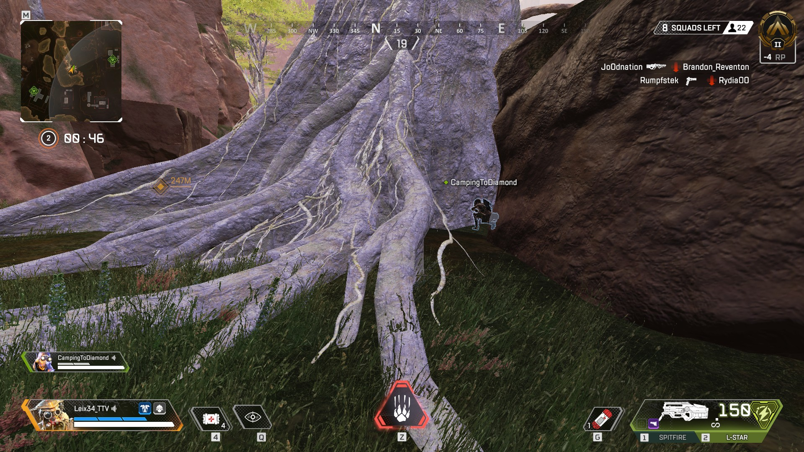
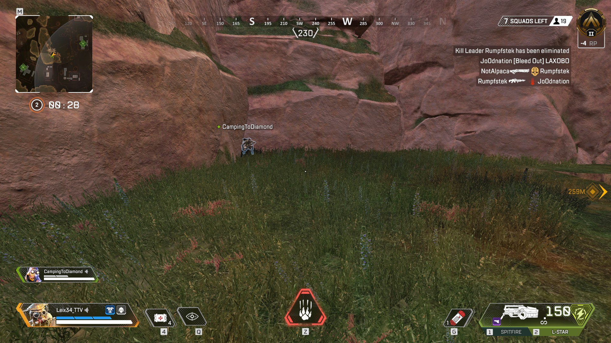
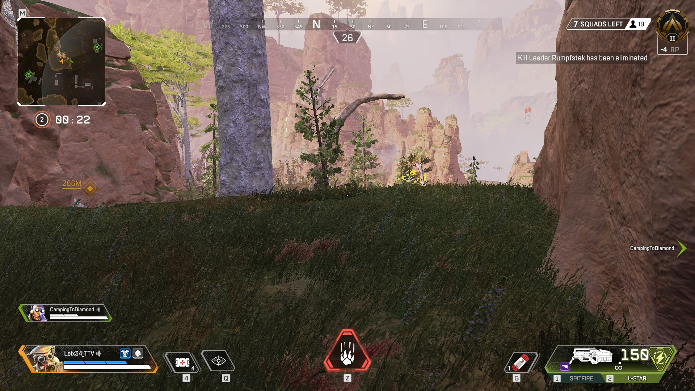

This spot is actually a 2 locations. You can choose to hide behind that tree and you are not noticeable from anywhere, ennemies have to go in front of you in order to reveal your location.
This location is reasonnable if teams are not fighting around you. There is very little chance that the ennemies will explore this area since there is no loot. However, if there is a lot of activity around you, you will be in trouble if someone arrives in front of you because you have no escape.
You can then chose the other higher spot. You have more space to fight and spread your team if an ennemy finds you. You will also be able to spot ennemies from further away thanks to the higher ground.
Make sure to keep your weapons out if you choose that location but do not switch: making noise can reveal your position.
